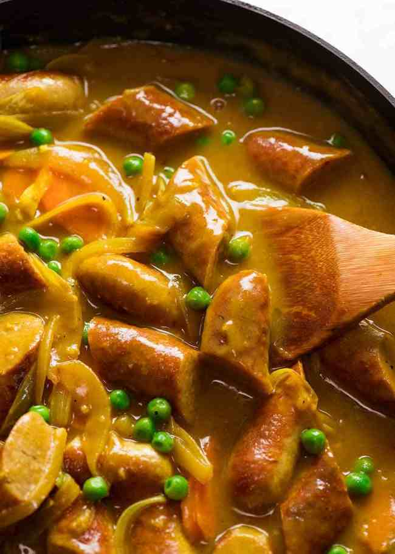

Malaysian Laksa Recipe

Description
The ultimate retro sausage recipe – Curried Sausages! Browned sausages in a curry flavoured sausage gravy with carrots and peas, it’s totally 80’s, totally kitsch, and we totally love it.
Ingredients
- 0.5 tbsp oil
- 600g / 1.2lb sausages
- 2 garlic cloves
- 1 onion
- 1 carrot
- 1 tbsp curry powder
- 3 tbsp flour
- 2 cups (500ml) chicken stock/broth
- 1 tsp sugar
- 1/2 tsp salt
- 1/2 tsp black pepper
- 1 cup peas
Steps
- Heat oil in a large skillet over medium high heat.
- Cook sausages, turning to brown all over then remove. Optional: slice sausages into pieces on the diagonal.
- In the same skillet, add garlic and onion. Cook for 2 minutes until translucent.
- Add curry powder and stir for 30 seconds.
- Add flour and mix for 30 seconds.
- Gradually pour in chicken stock, mixing constantly.
- Add carrots, sugar, salt and pepper, stir well.
- Add sausages and peas, bring to simmer and cook for 3 minutes or until sauce thickens.
- Serve over mashed potato, rice, pasta or noodles. For low carb, try mashed cauliflower!